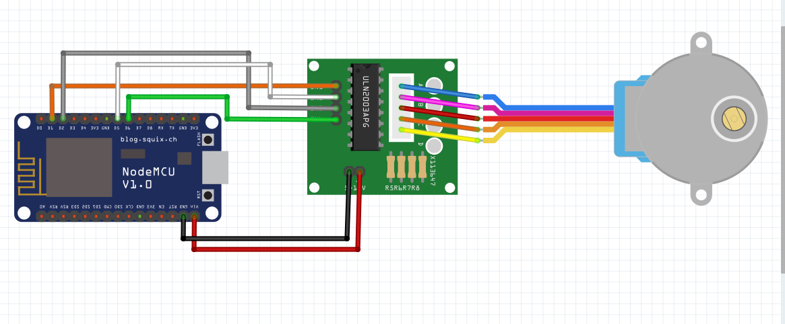

Authorized Online Retailers:
In this lesson, we will show how to remote control a stepper motor via MQTT protocol.
Hardware:
Software:
First,connect the step motor with the bridge,next connect the bridge board to the NodeMCU:
| NodeMCU | Stepper Bridge Board |
|---|---|
| Vin | Power+ |
| GND | Power- |
| D1 | IN1 |
| D2 | IN3 |
| D5 | IN2 |
| D6 | IN4 |

Connect the NodeMCU to computer via USB cable,open this sketch by using Arduino IDE(Version1.6.4+):
You can change is line to set the speed of stepper motor:
myStepper.setSpeed(80);
Edit the code to fit your own WiFi and MQTT settings as following operations:
1)Hotspot Configration:
const char* ssid = "your_hotspot_ssid";
const char* password = "your_hotspot_password";
Find above code line,put your own ssid and password on there.
2)MQTT Server Address Setting
const char* mqtt_server = "broker.mqtt-dashboard.com";
You can use your own MQTT broker URL or IP address to set above mqtt_server value. You can also use some famous free MQTT server to test the project such as "broker.mqtt-dashboard.com", "iot.eclipse.org" etc.
3)MQTT Client Settings
If your MQTT broker require clientID,username and password authentication,you need to change
if (client.connect(clientId.c_str()))
to
if (client.connect(clientId,userName,passWord)) //put your clientId/userName/passWord here
If not,just keep them as default.
After do that,choose the coresponding board type and port type as below,then upload the sketch to the NodeMCU.

About how to config the MQTT client,check this link.
Topics Settings:
Onece the upload done,if wifi hotspot name and password setting is ok and MQTT broker is connected, open the Serial Monitor,you will see following result:
The NodeMCU serial port will show the IP address and the connection satatus,then print the command published by the MQTT client.
As you can see from the sketch,When the payload on the publish topic is "1",the stepper motor rotates clockwise,and the Serial Monitor output is as follows:
"Command from MQTT broker is : [OsoyooCommand clockwise "
When the payload on the publish topic is "2",the stepper motor rotates counter clockwise ,and the Serial Monitor output is as follows:
"Command from MQTT broker is : [OsoyooCommand counterclockwise "


{kind=link}
{kind=link}
{kind=link}
{kind=link}
{kind=link}
{kind=link}